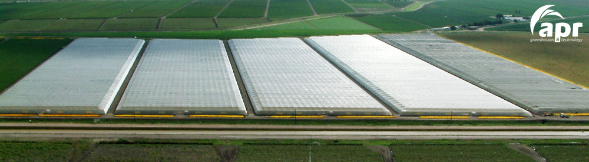
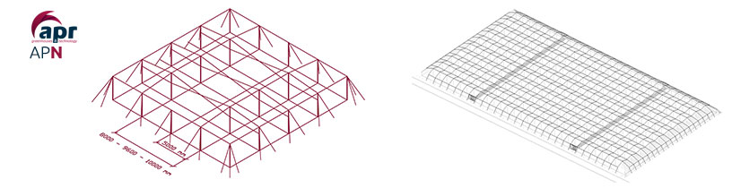

Invernadero Malla Sombra

Los invernaderos malla sombra o también denominados casa sombra constan de las estructuras más simples dentro de los diferentes tipos de invernaderos.
Consiste en un invernadero compuesto por tubos galvanizados o perfiles metálicos y dos mallas de alambre superpuestas que portan y sujetan la lámina de plástico, cuya cubierta es plana. Se puede adaptar a cualquier tipo de terreno con el objetivo de maximizar el uso del terreno.

Ventajas
- Se trata del invernadero más barato y sencillo.
- Gran adaptabilidad a la geometría del terreno.
- Presenta una gran uniformidad luminosa.
- Montaje rápido y sin soldaduras.
Características Estándares
Las dimensiones Estándares de este tipo de invernaderos son las siguientes:
- Ancho: 8- 9.60 -10 m.
- Altura al cenit: 7 m
- Distancia entre arcos: 8 - 9.60 - 10 m. (internos) 5 m. (externos)
- Bastidores de refuerzo perimetrales
Partes Estructurales Fundamentale
Pilares:
- Pilares Perimetrales: Tubo redondo galvanizado en caliente
- Pilares interiores: Tubo redondo galvanizado en caliente
Refuerzos
- Refuerzos perimetrales: Podemos tener pies de amigo o refuerzos laterales Cerchados
- Refuerzos interiores: Refuerzos en K o cruces de San Andrés
Cimentación / Soportes:
- Bloques cilíndricos de hormigón fabricados in situ colocados sobre pequeños pozos de cimentación.
¿Cuándo es adecuada su elección?
El uso de este tipo de invernadero está recomendado para climas templados, ya que por cuestiones de estanqueidad y aislamiento no se recomienda su empleo en climas fríos.
Debido a su diseño, su baja altura les confiere resistencia a fuertes vientos, y no permiten un control del clima muy exhaustivo en su interior debido al pequeño volumen de aire que aloja.
No es recomendable su uso en zonas lluviosas, debido a que acumula agua en la cubierta pudiendo formarse bolsas que comprometan la estructura y el film plástico.